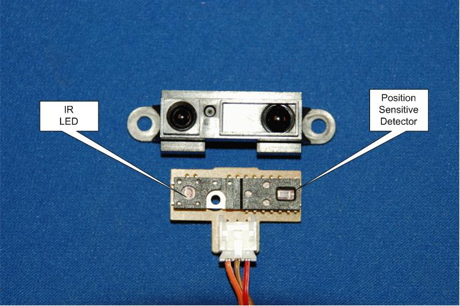
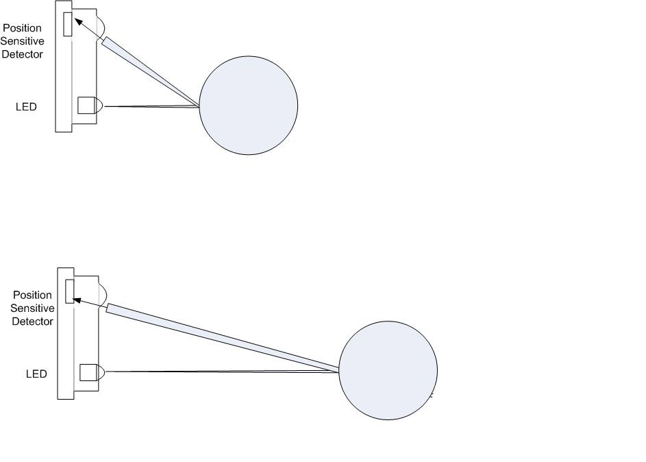
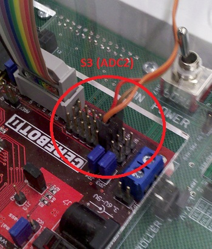

CPRE 288 Laboratory
Lab 6: I/R Distance Measurement via A/D Conversion
Lecture – Lab Connection
In lecture, you have studied the use of analog to digital conversion. In this lab,
you will use those hardware features to build a simple range finder.
This lab will have you explore configuration settings of the
ATmega 128's A/D conversion
functionality.
Prelab
- Read through this lab description. Skim the data sheet for the I/R distance sensor to grasp how it operates. Study the ATmega 128 User Guide related to A/D conversion (pg 232-233, 242-248).
- Draft
an initial sketch of a program that addresses this lab. The code needs to be complete, but
you don’t have to compile or execute it before coming to the lab. Attempt
to draft some code to show your TA.
- Print the Lab Evaluation Form, so that your TA can check off work performed during this lab session.
Think of answers to the following questions by reading the section on A/D Conversion in the Atmel Mega128 User Guide (starts on pg 232-248):
- What A/D registers should be configured for this lab? [2 points]
- What is the prescaler value necessary for this lab? [2 points]
- How many ADC clock cycles are necessary for the first conversion when ADEN in ADCSRA is set? [1 point]
NOTICE: If you receive a build error while using the math library (#include <math.h>), you may need to tell the compiler to link with libm.a in your configuration options.

Reference Files
Download the following files to a single folder your U: drive (right-click and select ‘Save Target As’. Alternatively, download the zipped folder at the bottom of the screen).
- util.c/util.h: The file that contains the utility functions for the VORTEX platform.
- lcd.c/lcd.h: The program file with a number of LCD functions
Distance Measurement

Figure 1: Internals of a IR Electro-Optical Distance Sensor

Figure 2: Top: Optical triangulation gauging distance of near object. Bottom: Optical triangulation gauging range of a more distant object.
The datasheet for the GP2D12 I/R distance sensor on page 8 has a response curve with voltage on the y-axis and distance on the x-axis. The output of the device is a continuous voltage ranging from 0 - 2.6V. In order for the VORTEX to have range finding abilities, an A/D conversion of the sensors' output must be performed followed by a translation of the quantized value to distance. As you see the curve is non-linear. The distance range from 0-9 cm will cause the sensor to produce voltage values consistent with distances further away. Ideally the sensor is never applied in situations were the distances are that close. In our mobile environment this ideal is not practical, so we will need to address this issue in future labs.
As mentioned before the sensor's range finding output curve is non-linear with distance. There are several methods to address this programtically. One involves finding an equation that approximates the curve and having the MCU use this equation to translate quantization values to distance. Complicated mathematical computations (e.g. non-integer transcendental computations (e.g. tan, exp)) are a challenge for an MCU. Depending on design criterion, the computational cost may not be acceptable. Another option would be to have a static table consisting of quantized values and corresponding distances. A simple table scheme could have one table and for 10 bit quantization has 1024 rows. This application is a good example of what is called the "time memory tradeoff". For the purposes of this lab description it is assumed your team will implement the brute force tabular technique. Other approaches are acceptable so long as they are documented sufficiently for your TA.
A few ADC facts for you to keep in mind:
-
The voltage on ADC2 will increase as the distance decreases.
-
The A/D quantized value will increase with voltage. The maximum value represents a voltage at VREF and the lowest value represents a voltage at GND.
-
The number of quantization levels changes depending on the number of bits of resolution used in the A/D process
-
The speed at which samples can be taken can be increased when one is willing to sacrifice bits of resolution.
-
The VREF we need is 2.56V, which is internally provided. This is because the voltage from the sensor will swing from 0 to 2.6V. One could choose higher VREF values, but with a fixed number of quantization values one sacrifices resolution in order to support a higher voltage range.
-
The clock signal that drives the A/D conversion process is based on the system clock (i.e. 16 MHz). Three prescaler selection bits in the ADCSRA register determine what prescaler is used to slow down the clock. According to the User Guide (pg 233) the clock rate range in which 10-bit A/D conversion is reliable is 50 KHz to 200 KHz. Considering the system clock is 16 MHz, there is only one prescaler (divisor) that will allow the ADC to operate in this range.
-
When configuring A/D conversion keep in mind that register settings are necessary to enable A/D conversion, set the prescaler value and initiate conversion.
-
How do you know the conversion result is ready for use? There are two methods. One is to poll the ADSC bit or enable the interrupt. To determine name of the interrupt handler, look in iom128.h in C:\WinAVR-20070525\avr\include\avr. You may also find other useful tidbits not mentioned in the ATmega 128 User Guide. Use of the interrupt is strictly optional. No extra points will be given to those using the interrupt.
Make sure the IR sensor is plugged into the correct port
See the picture below. The A/D pins of the ATmega 128 are accessible on Port F. The Cerebot II board has a series of headers that are tied to the pins of Port F. This series of 8x3 header pins are located next to the JTAG header. They are marked S1-S8. Due to the JTAG interface being enabled, S5-S8 are not available for A/D conversion. Connect the IR distance sensor across the row of 3 pins. The pins are marked G (ground), VS(voltage supply) and S (signal). You need to orient the sensor connector so the orange wire connects to signal and brown connects to ground. The voltage supply wire is in the center position. The S3 header row should be used for this lab. The S3 signal line is attached to the ADC2 pin of the ATmega 128.
Part I. Initial Distance Measurement
Requirement - Write a program that will sample the I/R distance sensor's analog output (voltage between 0-2.6V) with the ADC, compute the distance, and
display both the ADC result and the distance value (in centimeters). Accurately display a distance value for an
object 15 cm away. The output format should be the same for Part I and Part II. The format
should be:
Quantization Value, Distance cm
The quantization value and distance values will be dynamic based on values the A/D produces. The comma and the cm abbreviation should be present on the display as values update in order to make the output more understandable.
You will notice quite a bit of jitter in the quantized value even though the device and object are stationary. You may want to slow down how fast samples are taken as well as the display update frequency.
Part II. Calibrate Distance Measurement
Requirements - Average 5 samples to get a more stable sensor value. Then calibrate your IR sensor to accurately read distances from 9 to 50 cm. Continue to display the output as:
Quantization Value, Distance cm
The affect of the jitter found in the Part I can be reduced by averaging multiple samples and treating that average value as the current distance value. Write an averaging mechanism for your program. Average 5 samples with a sample taken every 50 ms.
Beyond the averaging mechanism, work on being able to provide cm resolution distance information from 9 - 50 cm. Your team will want to provide accurate distance information for distances beyond 50cm for use in future labs, but you are not required to support distances beyond 50 cm for this lab. In order to do this activity, use a ruler provided and a flat reflective surface to determine the quantization value for the distance between the object and the sensor. Note this mapping between quantization value and distance and move to the next distance. There are potentially a number of quantization values between centimeter gradations, so it is likely that more than one quantization value will have the same distance value assigned to it.
Demo the program execution on the board to your TA. Is this level of resolution useful?
Suggestion: All these multi-digit values need to be translated into strings before displaying them. You might find the lprintf useful. This function works in much the same way as printf, except that is will clear and then print to the LCD screen. Note that the lprintf function will display '?' instead of float values; to use floats, add -Wl,-u,vfprintf -lprintf_flt -lm to your project properties -> AVR/GNU C Linker -> Miscellaneous -> Linker Flags.
Part III. Feedback
Fill out a lab feedback form: Online Form
Reference Files
|
Files |
Description |
|
Files required for Lab 6 |
|
|
Evaluation form for Lab 6 |
|
|
Tell us what you think of the lab (feedback forms) |